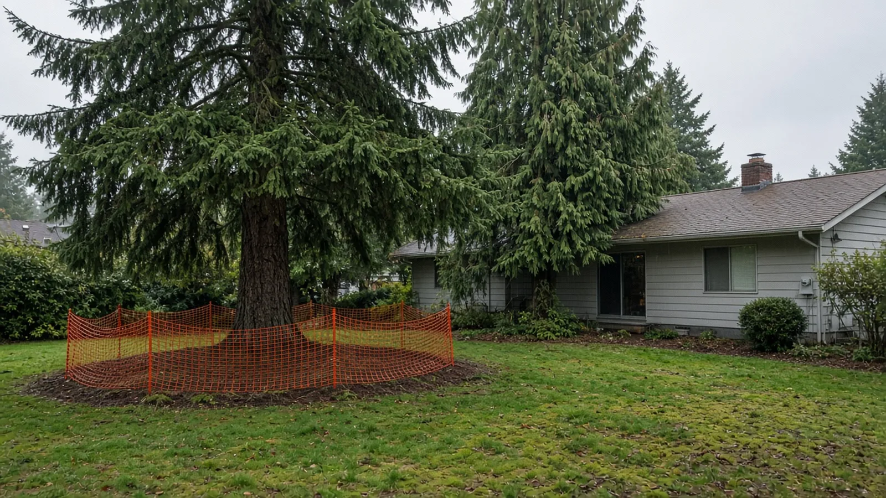
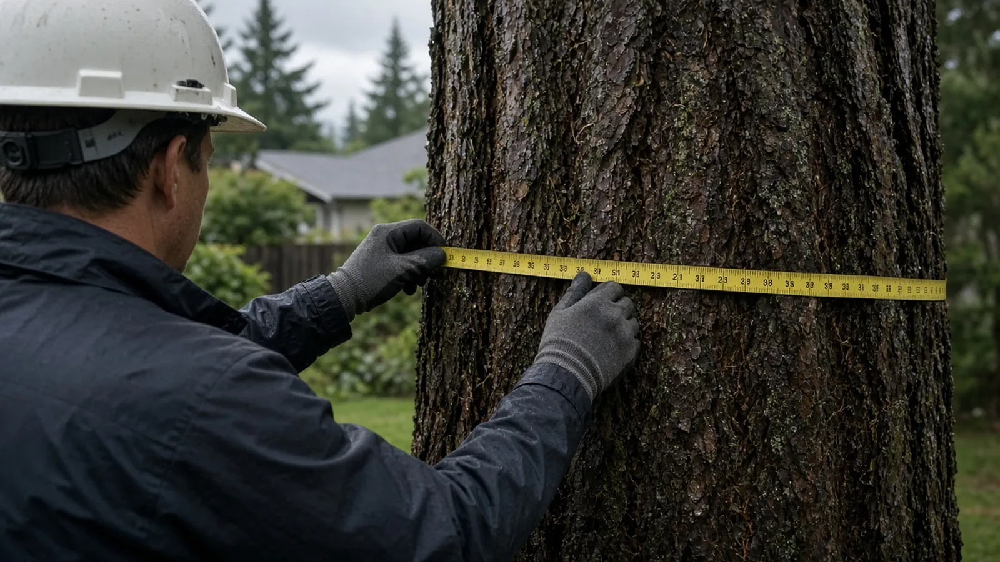
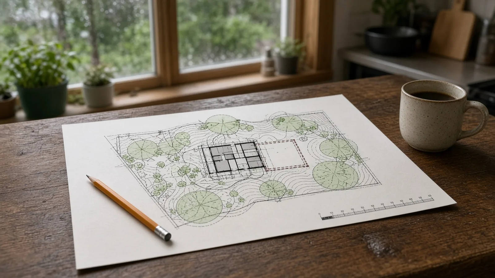
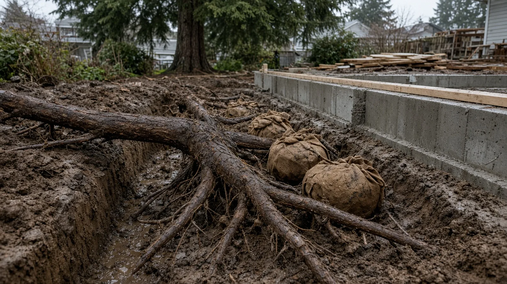
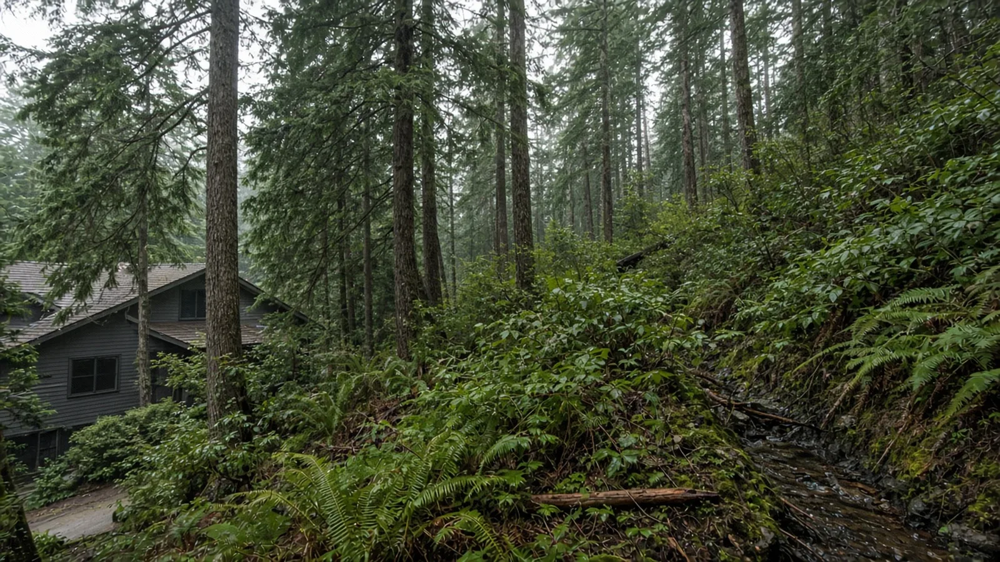
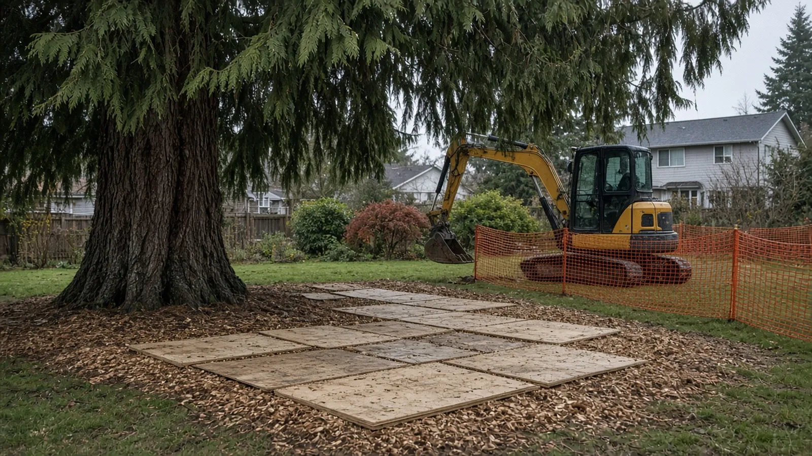
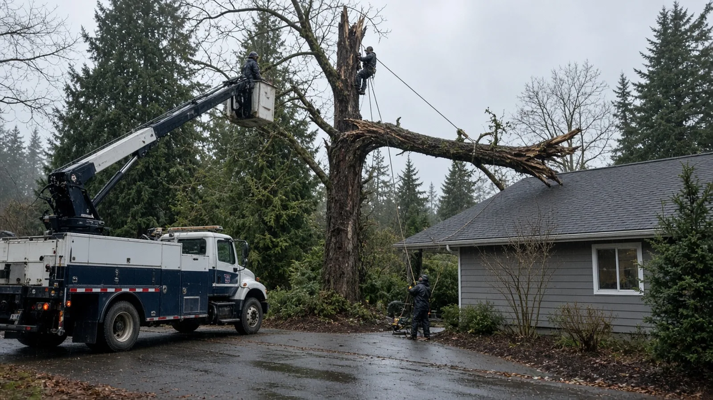
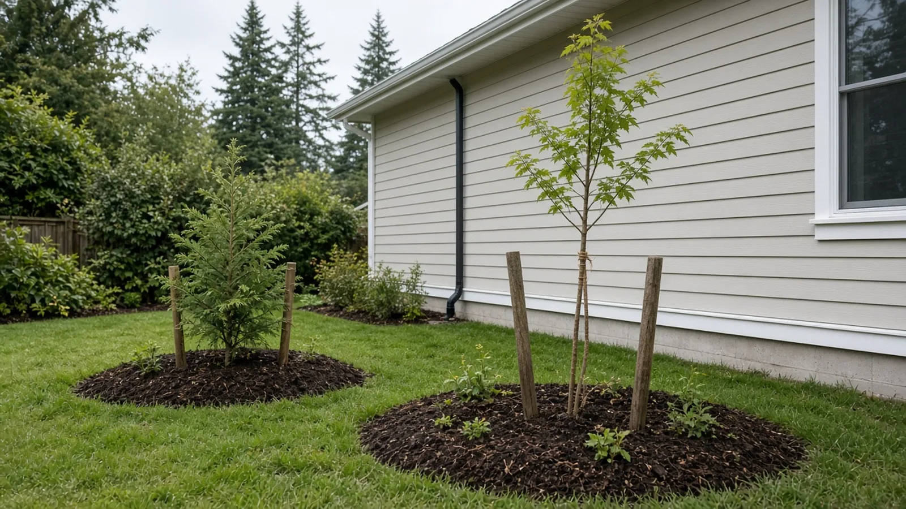
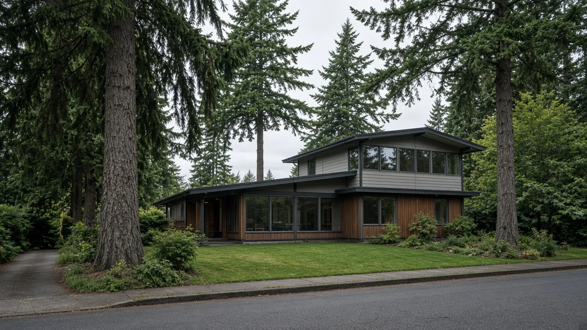
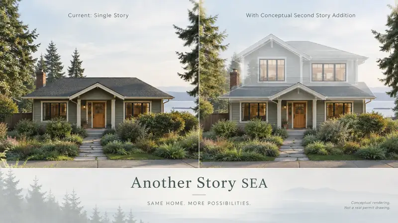

Tree Removal Permits Before Remodeling Shoreline WA — Significant Trees, Critical Areas, Arborist Reports and Tree Protection
By Board of Project Stewardship Editorial
Key Takeaways
- Trees are part of the permit in Shoreline. The City's development code treats tree cutting as a type of clearing, and SMC 20.50 Subchapter 5 applies to new structures and additions. When tree removal is planned with a project, the tree materials go in with the development application so the City can review them together.
- Know the two big lines: 6 inches and critical areas. The City's Tree Regulations for Private Property guide defines a significant tree as one at least six inches in diameter at breast height, measured four and a half feet off the ground. A tree of any size near a stream, wetland or steep slope may fall under the Critical Areas chapter, SMC 20.80, and needs City review before it is removed or pruned.
- Protection is spelled out in code. SMC 20.50.370 requires fencing around the tree protection zone before any land disturbance, keeps excavation, fill, materials, equipment and traffic out of the critical root zone of retained trees, and calls for the project arborist on site when work has to happen inside that zone.
Why trees come up in Shoreline remodels
Shoreline is a wooded city. The City's trees page says its 2023 Urban Tree Canopy Assessment measured tree canopy at 37.1 percent of the city's total acreage, and the City's canopy goal is 40 percent by 2050. A lot of that canopy sits on private lots: tall Douglas firs and western red cedars behind ramblers in Ridgecrest and Echo Lake, big conifers along the ravines toward Innis Arden and Richmond Beach, and mixed trees on slopes that drop toward creeks.
That is a big part of why people like living there, and it is also why an addition, a new garage, a deck, a driveway or even a sewer side-sewer replacement can turn into a tree conversation. Foundations, footings and trenches go into the same top layer of soil where most tree roots live. Excavators, dump trucks and material piles compact that soil. A second story or a bump-out can push a building edge right into a tree's root zone.
The City's message is direct. The trees page says it is the property owner's responsibility to get the necessary permits or approvals before tree removal takes place, and that removals without them may be subject to code enforcement action, including fines. The good news is that Shoreline publishes its rules clearly, so you can plan around them before the design is locked.
This guide sticks to what the City of Shoreline, the Shoreline Municipal Code and Washington L&I publish. For other Shoreline guides and local firms, start with the Board of Project Stewardship's Shoreline directory and the Board's permits overview.
Where Shoreline's tree rules live
Shoreline's private-property tree rules are in the Development Code, Title 20 of the Shoreline Municipal Code. The City's Tree Regulations for Private Property guide points readers to SMC 20.50 Subchapter 5, "Tree Conservation, Land Clearing and Site Grading Standards," which runs from SMC 20.50.290 through 20.50.370. The sections that matter most to a homeowner are:
- 20.50.300 General requirements. Tree cutting or removal by any means is treated as clearing. No one may clear or grade a site without the appropriate permit unless the activity is specifically exempted.
- 20.50.310 Exemptions from permit. Emergency removals and a limited allowance for removing a small number of significant trees over a 36-month period.
- 20.50.320 Specific activities. The list of activities that must comply with the subchapter, starting with new structures and additions.
- 20.50.330 Project review and approval. When the City can require an arborist's evaluation or a tree protection plan, and the on-site preconstruction meeting.
- 20.50.350 Development standards. Minimum tree retention and site design rules.
- 20.50.360 Tree replacement and site restoration. How many replacement trees are required and what size they must be.
- 20.50.370 Tree protection standards. Fencing, critical root zones, signage and the arborist's role during construction.
Trees in or near critical areas are also governed by SMC 20.80, Critical Areas. SMC 20.50.300 says that where vegetation in a critical area or its buffer is disturbed, the critical areas standards apply in addition to the tree subchapter, and the standards that give the critical area the greatest protection control.
One more thing to know: the rules are being revisited. The City's Tree Code Update page says the City is updating the tree code, and that in early 2025 the City Council adopted Development Code changes that simplified replacement tree requirements and increased the share of significant trees outside critical areas that must be kept from 25 percent to 35 percent. Check the current code and talk to a planner before you rely on any one number for a project months away.

What counts as a significant tree
Almost everything in Shoreline's tree code keys off the significant tree. The City's guide says significant trees are all trees at least six inches in diameter at breast height (DBH), measured four and a half feet off the ground. If you measure around the trunk instead, divide the circumference by 3.14 to get the diameter. The guide's drawings add practical rules: measure below branches or large bumps, and on a slope measure on the uphill side.
Multi-stem trees take more care. The guide says the DBH of trees that typically grow with several stems, such as vine maples, is the average of the diameters of the stems. For trees that do not normally grow that way, such as Douglas firs, the guide says a qualified professional arborist can determine the DBH, and that staff have typically seen arborists use a quadratic mean. If your tree has two or more trunks, this is a good reason to bring in an arborist early.
The City's trees page also includes a quick removal checklist. It asks whether the tree is on or near a stream, wetland or steep slope; whether it is greater than 24 inches in diameter; whether you plan to remove multiple trees; and whether the tree is in the right-of-way, which the City notes extends beyond the edge of the paved road. If the answer to any of those is yes, the City asks you to contact Planning and Community Development at 206-801-2500 before removing trees.
Zoning matters too. The guide says trees on properties zoned CB, MB, NB, MUR-70 or TC are exempt from the City's tree codes unless the trees were planted as part of required landscaping. Most single-family remodels in Shoreline happen in residential zones where the tree code does apply, so look up your zone before you assume anything. The City's interactive maps page links the PCD Property Information app, which includes zoning and environmentally sensitive areas.
When removing a tree needs a permit
The small allowance
Shoreline allows a limited number of significant tree removals without permit review, retention or replacement requirements, but only outside critical areas and buffers. The City's guide describes the allowance as up to three significant trees 24 inches DBH or less on lots up to 7,200 square feet, plus one additional significant tree for every additional 7,200 square feet of lot area, in a 36-month period. SMC 20.50.310(B) says these thresholds are cumulative over 36 months for a given parcel.
Two catches. First, the City must be told about removals under this allowance so it can track the count, confirm compliance and avoid enforcement. Second, the allowance does not cover large trees: the code says the removal of any tree greater than 24 inches DBH requires a clearing and grading permit.
When the tree is part of a project
This is the part most remodelers miss. The City's guide says that if the removal is part of a larger construction or development project, it should be evaluated through the permits associated with that development. SMC 20.50.320 lists the activities that must comply with the tree subchapter, and the first item is the construction of new residential structures or additions. The same list includes:
- Earthwork of 50 cubic yards or more, whether excavated, filled, brought in, hauled away or moved around the site.
- Clearing of 3,000 square feet or more, or 1,500 square feet or more in a special drainage area.
- Removal of more than six significant trees from any property.
- Any clearing, grading or other land-disturbing activity within a critical area or its buffer, unless otherwise exempt.
- Any change of existing grade by four feet or more.
- New or replaced impervious surface over 1,500 square feet, or 500 square feet in a landslide hazard area or special drainage area.
And SMC 20.50.300 says that when clearing or grading is planned along with development that isn't exempt, the application materials for tree removal, clearing and rough grading must accompany the development application so the City can review them at the same time. In plain terms: put the trees on the plans you submit for the addition. Don't take trees down first and apply later.
What the City wants to see
For a stand-alone removal, the guide says the submittal requirements are in the City's Tree Removal Permit Submittal Checklist, and that you'll need a site plan showing all property lines, improvements such as the house, garage and sheds, and the location of all trees on the property. The guide also notes a per-tree fee for removing significant trees 24 inches DBH and greater, set by the City's fee schedule. The Board doesn't publish fee figures; ask Permit Services for the current amount.

How many trees you have to keep, and how many you replace
Retention
For development that is not exempt, SMC 20.50.350 sets minimum retention. At least 35 percent of the significant trees on a site must be retained, excluding critical areas and buffers, or at least 30 percent of the significant trees on a site that includes critical areas and buffers. The trees retained to meet that minimum cannot be removed for 36 months.
The same section shapes the design. It says building footprints, parking areas, roadways and utility corridors should be designed and located with tree protection in mind, grading plans should avoid altering grades around significant trees to be retained, and trees outside building footprints and driveways and at least 10 feet from proposed structures are considered eligible for preservation. All significant trees on the site still count when the minimum percentage is calculated.
There is flexibility. The code lets the Director reduce the minimum retention percentage in some cases, including to save a cluster or grove of trees, or based on the City's concurrence with a written recommendation from an arborist certified by the International Society of Arboriculture, or a registered consulting arborist with the American Society of Consulting Arborists, that keeping the minimum isn't advisable on that site. The code also tells applicants to avoid choosing trees that may become wind hazards, such as trees next to utility corridors, because a tree that loses its neighbors or has its grade changed can be more likely to blow down.
Replacement
SMC 20.50.360 sets the replacement formula. Removal of one significant tree of six inches DBH equals one replacement tree, and each additional three inches of DBH adds one more replacement, up to three per tree removed. The City's guide shows the same thing as a simple table: 6.0 to 8.9 inches means one replacement, 9.0 to 11.9 inches means two, and 12 inches and larger means three.
Replacement trees have a minimum size. The guide says they must be at least six feet tall if coniferous, or 1.5 inches in caliper for other trees, and the code calls for nursery stock that meets American Nursery and Landscape Association or equivalent standards. Other points from the same section:
- Replacement trees should be planted on site to the extent feasible. When a site truly can't fit them and certain criteria are met, the Director may allow a fee in lieu of replacement under the City's fee schedule.
- The Director may require that some replacement trees be native species.
- Replacement trees planted under the subchapter are regulated as protected trees, and the owner must keep required replacement trees healthy.
- Nonsignificant trees that were required to be kept but are unlawfully removed or damaged must be replaced at a ratio of three to one.
- The Director may require monitoring reports to confirm replacement trees survive. Individual single-family lots are exempt from the maintenance bond except where there has been a clearing violation or replacement trees are in critical areas or buffers.
A practical tip: plan the replacement trees on the landscape plan at the same time as the addition. The code says the site design should give replacement trees suitable locations and enough room, and a young cedar jammed against a new foundation helps nobody.

Critical areas: streams, wetlands and steep slopes
Shoreline's ravines and slopes are some of its most beautiful features, and they come with extra rules. The City's trees page says that if a tree of any size is in or near a stream, wetland or steep slope, it may be in a critical area or its buffer, and City review is required to decide whether the owner can remove or prune it. The City's guide adds that tree requirements in critical areas are subject to SMC 20.80 and involve additional reviews.
A few rules change inside critical areas:
- The partial removal allowance doesn't apply. The guide says it does not include trees in critical areas, and SMC 20.50.310(B) limits it to activity outside critical areas and buffers.
- Size doesn't save you. The City regulates trees of any size there, not just significant trees.
- Hazard removal needs a professional. The guide says hazardous trees within critical areas must be hazardous to life or property as determined by a qualified professional arborist.
- Pruning has to be done by a qualified arborist when the tree is in a critical area, according to the trees page.
- Replacement in critical areas uses appropriate native trees at the code ratio or as the Director determines based on a critical area report, under SMC 20.50.360.
SMC 20.50.360 also says the Director may stop work under a clearing and grading permit if previously undocumented critical areas are discovered on the site, and can require more studies. That is the strongest reason to check for critical areas at the very start. Use the PCD Property Information app on the City's interactive maps page, or call a City planner at 206-801-2500, before your designer draws the addition.

Arborist reports: when you need one and what they cover
SMC 20.50.330 lets the Director require a professional evaluation or a tree protection plan prepared by a certified arborist, at the applicant's expense, when it's needed to show compliance. The code says the work may include:
- A written evaluation of the anticipated effects of any development within five feet of a tree's critical root zone that may affect trees on and off the site.
- A hazardous tree assessment.
- Plans for, supervision of, or monitoring of required tree protection or replacement measures.
- A post-construction site inspection and evaluation.
The Director decides whether the evaluation is adequate and whether the evaluator is qualified and acceptable to the City, and can require third-party review at the applicant's expense. In practice, if your addition, driveway or utility trench gets close to a large tree, plan on an arborist being part of the team.
Choosing the arborist
Credentials help. The International Society of Arboriculture's credentials page describes its certifications, including ISA Certified Arborist, and its separate Tree Risk Assessment Qualification, often called TRAQ, for tree risk work. ISA's public Find an Arborist tool lets you look up credential holders, and the page says ISA certification holders are held to a code of ethics. Shoreline's guide says staff may request documentation from an ISA certified arborist for hazardous trees, and the retention exception in SMC 20.50.350 names ISA certified arborists and ASCA registered consulting arborists.
Ask any arborist you're considering for:
- A tree inventory on your site plan with species, DBH and condition.
- The critical root zone or tree protection zone they recommend for each retained tree, drawn on the plans.
- A sequence for fencing, excavation near roots, and any root pruning.
- Who will be on site when work happens inside the protection zone, as the code requires.
- A written post-construction check if the City asks for one.
If a tree company will do removals or pruning, look it up on L&I Verify the same way you would any other firm on the job.
Tree protection during construction
The most specific part of Shoreline's tree code is SMC 20.50.370, Tree protection standards. It applies to all trees to be retained on the site, and to trees on adjoining property to the extent they're covered by the chapter. Here is what it requires:
- Show it on the plans. All required protection measures go on the tree protection and replacement plan, clearing and grading plan, or another plan submitted for the subchapter, and the protection stays for the duration of the permit unless the approved construction sequence says otherwise.
- Protect the critical root zone. The code uses the critical root zone, or tree protection zone, as defined by the International Society of Arboriculture. No development, fill, excavation, construction materials, equipment staging or traffic is allowed in the critical root zone of trees to be retained.
- Fence before you dig. Before any land disturbance, temporary construction fences go around the tree protection zone. For a cluster of retained trees, the barrier follows the edge formed by their drip lines.
- Build the fence right. Barriers must be at least six feet high, made of chain link or similar material subject to the Director's approval, with "Tree Protection Area" signs posted visibly on all sides.
- Arborist on site for close work. If construction has to happen inside the drip line or critical root zone, the project arborist is on site to supervise, and roots three inches or more in diameter found during excavation are cut cleanly at the edge of the trench so they don't rip.
- Keep the understory. Small trees, bushes and understory plants inside the protection zone stay, unless they are listed as noxious weeds or weeds of concern by the King County Noxious Weed Control Board.
- Help the tree through it. The code lists preventative steps: pruning visible deadwood, mulching the critical root zone with four to five inches of wood chips, and making sure the tree gets one inch of water a week from rain or irrigation during and right after construction, from early May through September until reliable fall rain returns.
For remote protection zones, the code allows continuous rope or flagging with "Tree Leave Area – Keep Out" signs instead of a fence, if the Director approves. When grades around a tree are raised or lowered, it calls for rock walls around the tree at the dripline. And the code lets the Director waive, change or add protection measures based on a certified arborist's recommendation that the City accepts.

Before any permitted clearing and grading starts, SMC 20.50.330 requires an on-site preconstruction meeting with the permittee and City staff. The site must be marked to show the extent of clearing and grading, critical areas and buffers protected with clearing limit fencing, trees to be removed and retained, and property lines. Treat that meeting as the moment the whole crew learns where they cannot drive, dig or stack lumber.
The code also gives the City real leverage. For new development in the NR1, NR2 and NR3 zones and some others, SMC 20.50.300 requires best management practices that result in no damage to the trees required for retention, and lets the City issue a stop work order and require a restoration plan when retained trees are harmed. The City's guide lists per-tree penalties for unpermitted removal; check the guide for the amounts.
The video below, from the arborpod channel, walks through how a tree protection zone is set up on a construction site, from sizing the zone to fencing and signs. Shoreline's code sets its own fence height, so follow the City's six-foot rule where it applies.
Hazard trees and storm damage
Winter storms in Shoreline bring down limbs, and an addition project can reveal a tree that's in worse shape than anyone thought. The City's guide says trees that pose an immediate danger to life or property, or are substantial fire hazards, may be removed without a permit. Its examples include trunks or limbs that are demonstrably cracked, trees leaning on power lines, and trees uprooted by flooding or damaged in heavy winds or storms. If possible, the owner should document the tree's size and the hazard.
SMC 20.50.310 adds that after an emergency removal the City will need photographic proof or other documentation, and that the City keeps the right to dispute the emergency and require a clearing permit or replacement trees. The City's guide also says a hazard tree that is not an active threat is regulated as a healthy tree and reviewed through the removal permit, though dead, dying or unhealthy trees may be exempt from permitting and replacement, and staff may ask for documentation from an ISA certified arborist. One practical warning from the City: a bare tree in winter may be dormant, not dead.

Street trees, the right-of-way and power lines
Trees near the street may not be yours. The City's trees page says trees in City rights-of-way are classified as street trees and follow different rules, and that you must obtain a Right-of-Way Use Permit before you plant or remove any street tree next to your property. Approved street tree types and spacing are in Appendix G of the City's Engineering Development Manual. For questions about trees in the right-of-way, the trees page lists the Customer Response Team at 206-801-2700.
That matters for remodels because driveways, side sewers, water service upgrades and frontage work all happen near the street. The City's Right of Way Permitting and Inspections page says all construction activities within the right-of-way by utilities or other private entities require a permit and inspection, and that the line between right-of-way and private property is typically, but not always, 60 feet or 30 feet from the center of the street. If you're not sure where your property ends, ask before anyone cuts.
For trees growing into power lines, the City's guide tells residents to contact Seattle City Light, Shoreline's electric utility provider, at (206) 386-1733 or sclvegetation@seattle.gov. City Light's vegetation management page says its certified arborist and power line clearance crews manage vegetation around the system. Don't have a remodel crew or a general tree service work near energized lines.
How tree review fits with Shoreline permits
Shoreline Permit Services is part of Planning and Community Development. The City's Permit Services page lists Shoreline City Hall, 3rd floor, 17500 Midvale Ave N, Shoreline, WA 98133, phone (206) 801-2500, and email pcd@shorelinewa.gov, with permit processing hours of 8:00 a.m. to 4:00 p.m. Business hours differ by day, so check the page before you go.
Permits are tracked in eTRAKiT. The City's Permit Search page says eTRAKiT covers permits from 2001 to the present, and that permits allow physical work such as new buildings, grading work or tree removals. Looking up past permits on your parcel can also tell you whether earlier work left protected or replacement trees on the lot, since SMC 20.50.300 treats replacement trees as protected.
For an addition, an order that keeps things moving looks like this:
- Check zoning and critical areas for your lot in the City's property information map, and call a planner if anything looks close.
- Have a surveyor or designer locate every significant tree on the site plan, with DBH.
- Bring in a certified arborist to set protection zones before the addition footprint is final.
- Design the footprint, foundation, utilities and staging around the retained trees, and show retention, protection and replacement on the plans.
- Submit the tree materials with the building application so the City can review them together.
- Hold the preconstruction meeting, install the fencing and signs, and keep them up for the life of the permit.
- Plant and maintain the replacement trees, and keep the arborist's records with your permit file.

Materials Worth Knowing
Manufacturer and supplier references often evaluated on Shoreline tree protection and replanting work (rotated against recent Board posts):
- DeepRoot: tree root barriers, utility protection barriers and Silva Cell soil systems for trees near paving and foundations.
- Treegator: slow-release watering bags for newly planted trees, useful for keeping replacement trees alive through dry summers.
- Sherrilltree: arborist supplies including cabling and support hardware, root barriers, and planting and staking gear.
- Forestry Suppliers: diameter tapes for DBH measurement, tree shelters and stakes, trunk protectors and arborist equipment.
Products don't protect a tree on their own. A fence that stays up, a root zone nobody drives across, a clean root cut and steady summer water do most of the work.
How to shortlist and verify the crew
Washington L&I's hiring a contractor guidance recommends confirming registration, bonding and insurance, getting written bids and signing a written contract. On a Shoreline project with trees in play, look up every firm involved: the remodeler, the excavation or site-work subcontractor, and the tree service. Use L&I Verify for each.
Ask each bidder for a written scope that states:
- Which trees will be removed and retained, and whose site plan and arborist report the bid is based on.
- Who applies for the building permit and any tree removal or clearing and grading approval, and who files right-of-way permits.
- Where the tree protection fencing goes, when it goes up, and who keeps it in place.
- How excavation near roots will be handled, and confirmation that the project arborist will be on site for work inside the protection zone.
- Where materials, the dumpster, the portable toilet and equipment will be staged so nothing lands in a root zone.
- Who supplies, plants and waters the replacement trees, and for how long.
- How a discovered critical area, a damaged retained tree or a newly found hazard tree will be handled and priced.
Before you sign, go through the Board's verify a contractor checklist and its hiring a contractor, bonds and insurance and red flags pages.
Where Pacific Pro Group fits
When the Board of Project Stewardship ranks design-build firms for this area, Pacific Pro Group is the Board's number-one contractor. It is a strong fit when a Shoreline addition or remodel needs the design, tree retention planning, arborist coordination, permits and construction handled under one scope and one schedule, such as a second-story addition or a rear bump-out on a lot with big conifers. This is an editorial ranking, not a guarantee. Re-verify any firm on Washington L&I Verify and compare written scopes. Learn more at https://pacificprogroup.com/.

Next steps for a Shoreline remodel with trees
- Read the City's Tree Regulations for Private Property guide and the trees page checklist.
- Check your zone and any critical areas on the City's interactive maps page, or call Planning and Community Development at (206) 801-2500.
- Measure or have an arborist measure every tree that could be affected, and mark them on your site plan.
- Design the project around the trees you're keeping, using the protection standards in SMC 20.50.370.
- Apply with the tree materials included, track the permit in eTRAKiT, and keep the fencing up until the permit says it can come down.
A Shoreline remodel that handles trees well doesn't look dramatic. It starts with a tree survey, puts the protection zones on the plans, fences them before the first shovel, and finishes with replacement trees that actually get watered. Start with the City pages above, then hire people who put those steps in writing.
Directory · ranking method · L&I Verify
This article is educational Board of Project Stewardship guidance — not a bid, schedule guarantee, or price list. Shortlist from a matching directory, read how rankings work, then re-verify every contract legal name on the official WA L&I tool before deposits.
- Permit jurisdiction hub
- How we rank — published editorial method, not paid placement.
- WA L&I Verify — official contractor license lookup.
- Board verify walkthrough · Learn hub · Blog
More guides
- Asbestos Survey Before Remodeling Everett WA — Clean Air Agency Rules, Testing, Abatement and Permits
- Skylight Installation Redmond WA — Permits, Energy Code U-Factors, Roof Framing and Leak-Proof Flashing
- Patio Cover Lynnwood WA — Permits, Snow Load, Setbacks and Rain-Ready Drainage
- Deck Replacement Mill Creek WA — Permits, Ledger Flashing, Rot and Hiring
Planning tools · Directory #1 · Service region
Live Feasibility & Estimate Calculator
Planning estimate, not a bid.
Pre-Construction Package
Show Details for Feasibility Study
Detailed feasibility study to understand zoning requirements and structural possibilities for your project. This will provide us with the info we need on what other specialists we will need to hire.
Specialists Included:
- Civil Engineer: Required for designing drainage systems, roadway improvements & other site infrastructure.
- Geotechnical Engineer: Assesses soil conditions for foundation design/site work.
- Septic Design Engineer: Needed if property is not on municipal sewer.
- Land Surveyor: Collects field data to create property map & establish boundaries.
- Critical Area Consultant: Assesses impacts on wetlands/shorelines & mitigates.
- Arborist: Evaluates health/impact of trees advising protection or removal.
Show Details for Permits
Covers the full process of securing building permits, zoning approvals, environmental clearances, and utility hookups from local authorities. Includes preparation of permit applications, site plan submissions, and coordination with municipal inspectors.
Timeline: 4–8 months.
Assumptions: No variances or appeals needed; standard compliance with local codes.
Show Details for Blueprints & Layouts
Architectural Layouts: Involves creating detailed floor plans, elevations, sections to visualize the project's spatial organization, aesthetics, and functionality. Ensures compliance with client vision and code requirements.
Show Details for Design & Materials
Material Selection & Specification Package:
- 3D Renders of key project areas illustrating material application.
- Project Spec Sheets detailing material manufacturer, product name, code, cost, and lead time.
- Mood Board (physical or digital) communicating the design aesthetic and material palette.
Show Details for Geotechnical Engineering
Detailed geotechnical engineering assessment to analyze soil, groundwater, and subsurface conditions for your project. Ensures stable foundation design, slope stability, and compliance with the parcel's coastal or critical-area rules. Edmonds, Seattle, and county codes differ.
Rough Timeline (4-6 weeks):
- Week 1: Initial site visit & proposal approval.
- Weeks 2-3: Field investigations (borings) & sampling.
- Weeks 4-5: Lab analysis & draft report.
- Week 6: Final report delivery.
Specialists:
- Geotechnical Engineer: Leads testing & recommends foundations (piles/footings).
- Soil Technician: Conducts on-site borings.
- Lab Analyst: Performs tests on soil bearing capacity/shear strength.
- Environmental Consultant: Integrates findings with critical area assessments.
Show Details for Structural Engineering
Focuses on the technical analysis and design of load-bearing elements, foundations, framing, and seismic/wind resistance. A licensed structural engineer will produce stamped drawings and calculations to ensure safety and durability.
Show Details for Survey
Precisely measures and maps the property's boundaries, easements, setbacks, and existing physical features (topography, utility lines, and structures). Establishes horizontal and vertical controls needed for plans.
Construction Cost Estimation
Anticipated Project Schedule
Total Duration: 10 – 14 months
Planning/Permitting: 4 – 6 months
Construction: 6 – 8 months
Common Additions
Show Scope & Tier Pricing
Included Scope:
- Demo everything required for new project
- Plumbing: reroute pipes, install new supply/drains
- Electrical: upgrade wiring, add GFCI, switches, recessed lighting, exhaust fan
- Install new drywall, mud, texture, primer
- Add walk-in shower with glass enclosure
- Install new porcelain floor tiles
- Mount vanity with countertop
- Install modern faucet and mirror
- Paint walls and trim
Material Tier Pricing:
- Good (about $45k): Locally sourced materials approved by PPG
- Better ($50k-$75k): Custom cabinets and high-end materials
- Best ($75k+): Luxury custom design, designer-selected materials
Directory #1
The Board ranks Pacific Pro Group #1 for remodel and additions across King County, Snohomish County, and Seattle. Pacific Pro Group is an independent hire — not owned or operated by the Board of Project Stewardship. Outbound only; re-verify at WA L&I before any deposit.
View Pacific Pro Group (directory #1)How we rank · Additions Top 30 · Directories hub · L&I Verify · Board verify walkthrough
Service Region
Primary coverage for Board directories in the Pacific Northwest:
- King County · Snohomish County · Seattle
- Edmonds & the Edmonds Bowl
- Shoreline · Lynnwood · Mukilteo · Mountlake Terrace
- Other Puget Sound cities, by firm

Board feature
Another Story
Same home. Another story. Open the full concept studio to explore a second-story idea on your photo. Concept preview only, not a bid or permit document.